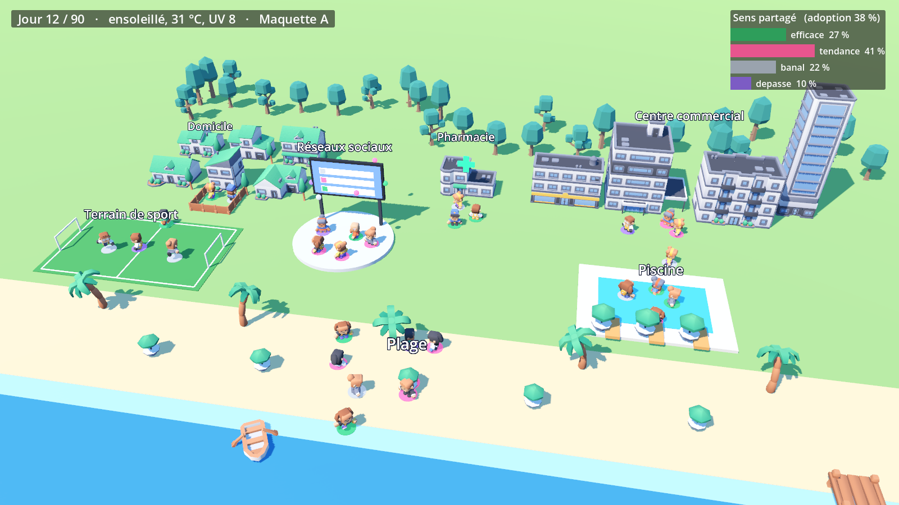
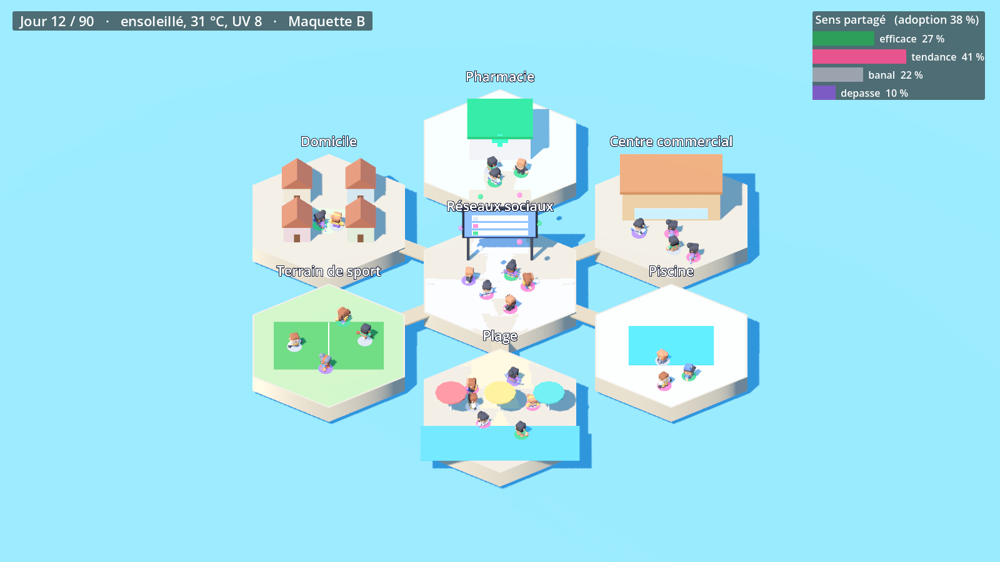
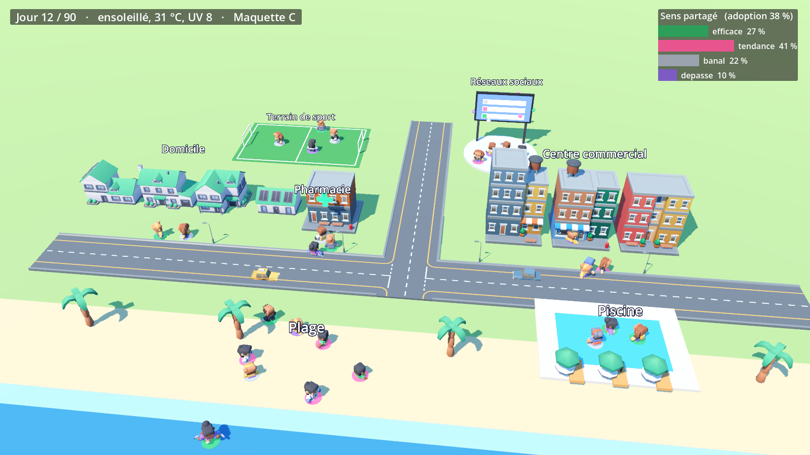
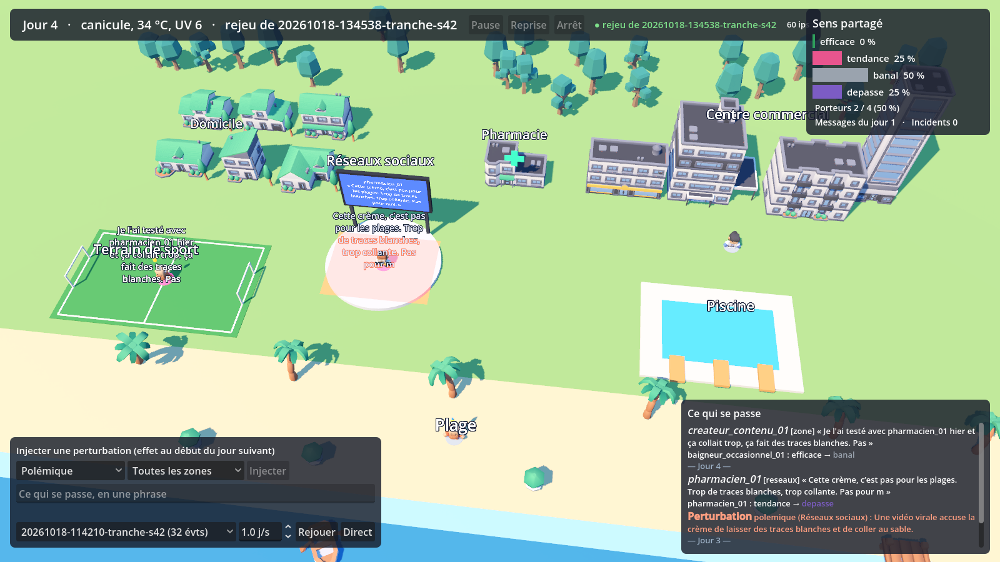
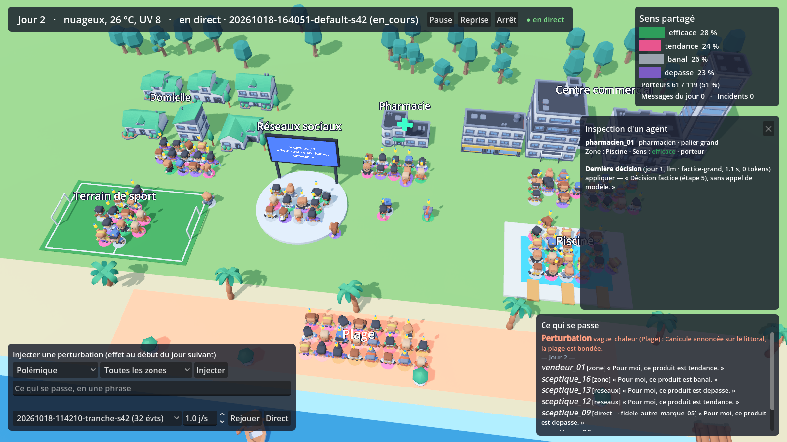

Mondes vivants · Sujet 04 ÉPHÉMÈRE · Simulation multi-agents du lancement d'une crème solaire fictive
CLAUDE.md, les décisions de conception dans docs/contexte-projet.md.
Le projet repart de zéro le 16 octobre 2026. Chaque étape est validée par le binôme avant de passer à la suivante, puis fait l'objet d'un commit. Les codes entre parenthèses renvoient aux exigences de l'énoncé.
| # | Étape | Contenu | État |
|---|---|---|---|
| Phase 0 — Faire place nette | |||
| 0 | Nettoyage du dépôt | Retrait du prototype non conforme, mise à jour de CLAUDE.md, README et journal | terminée |
| Phase 1 — Fondations | |||
| 1 | Squelette du dépôt | Arborescence, .gitignore, .env.example, Python 3.12, ruff, fichier de configuration | terminée |
| 2 | Infrastructure Docker | Kafka (KRaft) et Redis en versions figées, création des 7 topics sim.* | terminée |
| 3 | Mesure de la machine | Réglages Ollama, benchmark par modèle en séquentiel puis en parallèle (E4) | terminée |
| Phase 2 — Le cœur, sans contenu du monde | |||
| 4 | Contrat d'événements | Enveloppe Pydantic versionnée, deux horloges, caused_by, file sim.dlq (F4, C3, F6) | terminée |
| 5 | Horloge et orchestrateur | Mode synchrone, délai de livraison, run_id et graine (C2, C3) | terminée |
| 6 | Couche LLM | Sortie JSON imposée, routeur par palier, relance puis repli, incidents, coûts (A4, A5, E4) | terminée |
| 7 | Tranche verticale | 3 agents LLM et 1 agent à règles sur 5 pas, lus par un client console | terminée |
| 8 | Historique et rejeu | Écriture Parquet, relecture d'un run sans appel LLM (E3, F5) | terminée |
| Phase 3 — Visualisation | |||
| 9 | Pont FastAPI | WebSocket en direct ou en rejeu, inspection (D2), injection (D3) | terminée |
| 10 | Scène Godot 3D | Bâtiments distincts par zone, plage avec sable et mer, personnages animés, panneau d'indicateurs (D1) | terminée |
| Phase 4 — Le monde et ses agents | |||
| 11 | Le monde | Nom de marque et test de contamination, population complète, seuils d'adoption | terminée |
| 12 | Corpus et RAG | Documents fictifs, ChromaDB, filtres par date et par rôle, mémoires, évaluation (F1, F2, A1, C6) | terminée |
| 13 | Agents à règles et baseline | Météo, vendeurs, concurrent, fidèles ; baseline C0 avec la même saisonnalité (A6, E1) | terminée |
| 14 | Indicateurs | Sens partagé, adoption, traçabilité, run témoin, taux de sortie de rôle (B1-B3, F6) | terminée |
| 15 | Mode asynchrone | Deuxième mode d'exécution, violations temporelles comptées (C4, C6) | terminée |
| Phase 5 — Preuves et soutenance | |||
| 16 | Expériences | Configurations C0 à C3, au moins 5 runs chacune, Bass, synchrone/asynchrone, coûts (E1, E2, E4, E5, C5) | à venir |
| 17 | Charge et pannes | Agent muet, pic d'événements, latence jusqu'aux indicateurs (O4, C7) | à venir |
| 18 | Soutenance | Configuration de démo réduite, deux tailles de population (C8), README, run enregistré, rapport | à venir |
Pourquoi cet ordre. On construit d'abord la tuyauterie (événements, horloge, appels LLM) avec très peu d'agents, pour vérifier que tout circule. Le rejeu arrive tôt (étape 8) parce qu'il permet ensuite de développer la scène 3D sur des runs enregistrés, sans occuper la carte graphique avec les modèles. Le contenu du monde (marque, corpus, population complète) vient une fois la chaîne fiable.
Repartir d'une base propre : ne garder dans le dépôt que ce qui est conforme aux règles du
projet (CLAUDE.md), aux décisions de conception (docs/contexte-projet.md)
et à l'énoncé.
Un premier prototype avait été écrit avant que la conception soit arrêtée. En le comparant aux règles du projet, plusieurs écarts sont apparus, dont certains touchent des exigences notées :
| Écart dans le prototype | Règle ou exigence concernée |
|---|---|
| Nom de marque, ingrédient et indice de protection écrits en dur dans le code et les prompts | Le nom doit rester un paramètre de configuration, choisi après un test de contamination |
Topics simulation.* au lieu des 7 topics sim.* prévus | C1, architecture |
Événements sans run_id, sans caused_by, et date de traitement en temps réel au lieu du temps simulé | C3 (deux horloges), F6 (traçabilité), E3 (rejeu) |
Pas de Redis ; images Docker en version latest | F3 ; livrable reproductible sur une autre machine |
Pas de .gitignore, fichiers compilés Python versionnés, arborescence différente | Conventions du dépôt |
| Visualisation 2D à base d'icônes | Remplacée par une scène 3D (décision du binôme) |
Corriger ces écarts un par un aurait coûté plus cher que de reconstruire proprement, étape par étape.
src/, godot_client/,
docker-compose.yml, requirements.txt. Ces fichiers avaient été commités,
ils restent donc consultables dans l'historique git (commit 607297b).src/agents/, src/rag/,
src/simulation_engine.py, data/knowledge/, les caches Godot et
l'environnement virtuel. Ils sont dans
C:\Users\Siradiou\archive_prototype_S9_2026-10-16\.CLAUDE.md : chemin correct de l'énoncé, Python 3.12,
Godot en 3D low-poly, et une section « Méthode de travail » qui fixe la règle d'avancement
étape par étape.docs/contexte-projet.md.README.md : description du projet pour GitHub et
tableau d'avancement, mis à jour à chaque commit.py install 3.12), pour l'utilisateur seulement, sans droits administrateur.
Python 3.14 reste installé et reste la version par défaut ; on appelle 3.12 explicitement avec
py -V:3.12.docs/journal/journal-de-bord.html, PDF généré à la racine par
docs/journal/build.ps1 (impression via Microsoft Edge, déjà présent sous Windows,
donc aucune dépendance à installer).| Décision | Raison |
|---|---|
| Python 3.12 | Version stable bien prise en charge par les bibliothèques prévues (ChromaDB notamment), qui suivent souvent les nouvelles versions de Python avec retard. Python 3.12.10 a été installé à côté de 3.14 (voir ci-dessous). |
| Scène Godot en 3D low-poly, rendu léger | Plus lisible et plus parlante pour le jury, tout en laissant de la mémoire graphique aux modèles LLM (budget d'environ 1 à 1,5 Go pour Windows et Godot). |
| Modèles 3D gratuits choisis sur maquettes | Plusieurs essais seront présentés au binôme, qui choisira (étape 10). |
| Avancement étape par étape, commit après validation | Chaque étape est comprise et expliquable par les deux membres avant d'aller plus loin. |
CLAUDE.md règles permanentes du projet
README.md présentation et état d'avancement
journal-de-bord.pdf ce document
docs/
contexte-projet.md décisions de conception
Architecture_…pdf schémas d'architecture
Mondes-Vivants_…html énoncé
journal/
journal-de-bord.html source de ce document
build.ps1 génération du PDF
.venv du projet (étape 1) est
créé à partir de lui et contient toutes les bibliothèques. Ainsi les dépendances du projet
n'interfèrent pas avec le reste de la machine, et la procédure se reproduit sur la machine de
la collaboratrice.Étape 1 — Squelette du dépôt : environnement virtuel .venv en Python 3.12, arborescence, .gitignore,
.env.example, outillage ruff, et fichier de configuration qui portera
BRAND_NAME, le nombre d'agents, le mode d'exécution et la graine.
Poser le cadre dans lequel tout le code viendra se ranger : un environnement Python isolé et reproductible, une arborescence qui suit l'architecture, des outils de qualité, et un fichier de configuration qui centralise tous les paramètres d'un run.
.venv créé à partir de Python 3.12.10. Toutes
les bibliothèques du projet y sont installées, rien sur le reste de la machine.sim, agents, llm, bus, rag,
indicators, bridge, replay), plus corpus,
godot, configs et tests. Chaque paquet Python porte une
phrase qui dit à quoi il sert.pyproject.toml : fiche d'identité du projet. Il déclare les
dépendances directes avec leur version exacte, configure ruff (style et erreurs courantes) et
pytest.requirements.lock : liste complète et figée de toutes les
bibliothèques installées, y compris les dépendances indirectes..gitignore : exclut l'environnement virtuel, les caches, le fichier
de secrets .env, les sorties de runs et le cache de Godot..env.example : modèle du fichier de secrets, sans valeur (adresses
d'Ollama, Kafka, Redis ; clés d'API facultatives).configs/default.yaml et son chargeur
sim/config.py, plus la liste des 11 rôles dans agents/roles.py.tests/test_config.py.| Décision | Raison |
|---|---|
| pip + fichier verrou | Outils standards de Python, rien à apprendre en plus. Le verrou fige aussi les dépendances indirectes : la collaboratrice obtient exactement les mêmes versions. |
| Configuration en YAML, validée par Pydantic | Lisible et commentable, prévu dans le document d'architecture. La validation transforme une faute de frappe en erreur claire au lancement plutôt qu'en comportement faux au milieu d'un run. |
| Une dépendance n'arrive qu'avec l'étape qui l'utilise | Chaque bibliothèque du
projet est justifiée et expliquable. Ainsi python-dotenv (lecture de
.env) attendra l'étape 2. |
Nom de marque provisoire MARQUE_PROVISOIRE | Le vrai nom sera choisi à l'étape 11 après le test de contamination. Comme il n'existe que dans la configuration, le changer ne touchera aucun code. |
Un run est entièrement décrit par un fichier YAML en quatre sections :
| Section | Contenu | Valeur par défaut |
|---|---|---|
run | Graine du générateur aléatoire | 42 |
simulation | Durée simulée en jours, mode d'exécution | 90 jours, synchrone |
monde | Nom de marque, ingrédient phare, indice de protection (fictifs) | valeurs provisoires |
population | Nombre d'agents pour chacun des 11 rôles | 120 agents, dont 84 LLM |
Au chargement, load_config vérifie chaque valeur. Sont refusés : une durée nulle, une
graine négative, un mode autre que synchrone ou asynchrone, un nom de marque
vide, un rôle inconnu, un effectif négatif, une population vide, et toute clé mal orthographiée
(par exemple duree_jour au lieu de duree_jours). L'erreur indique le fichier
et le champ fautif.
population du fichier YAML, ou on crée un autre fichier dans configs/.
Le code ne change pas. Un test le vérifie avec une population de 4 agents.
| Test | Ce qu'il garantit |
|---|---|
test_default_config_matches_design | La configuration par défaut correspond à la conception : 120 agents, 90 jours, mode synchrone, les 11 rôles présents. |
test_agent_count_comes_from_config | Le nombre d'agents vient bien du fichier (C2). |
test_invalid_values_are_rejected (7 cas) | Chaque valeur invalide listée plus haut est refusée. |
test_empty_population_is_rejected | Un run sans agent est refusé. |
test_missing_file_gives_clear_error | Un fichier absent donne une erreur lisible. |
Résultat : 11 tests réussis, aucune remarque de ruff. La procédure d'installation du README a été rejouée dans un environnement neuf pour vérifier qu'elle fonctionne telle qu'écrite.
pyproject.toml identité du projet, dépendances directes, ruff, pytest requirements.lock toutes les versions figées .gitignore .env.example configs/default.yaml configuration principale (120 agents, 90 jours) sim/config.py chargement et validation de la configuration agents/roles.py les 11 rôles tests/test_config.py 11 tests sim/ agents/ llm/ bus/ rag/ indicators/ bridge/ replay/ paquets Python corpus/ godot/ à remplir aux étapes 10 et 12
pyproject.toml pour les dépendances
directes, requirements.lock pour toutes), ce qui répond à l'exigence de livrable
reproductible sur une autre machine.Étape 2 — Infrastructure Docker : Kafka en mode KRaft et Redis, versions figées, création des
7 topics sim.*, et vérification que Python peut y écrire et y lire.
Mettre en place les deux services qui tournent à côté de la simulation : Kafka, le bus par lequel passent tous les événements, et Redis, qui garde l'état courant du monde. Vérifier que le code Python sait y écrire et y relire.
| Service | Rôle dans le projet | Pourquoi lui |
|---|---|---|
| Kafka | Journal ordonné de tous les événements : décisions des agents, messages, météo, indicateurs, incidents. Les agents ne s'appellent jamais directement, ils publient et lisent des événements. | Imposé par l'énoncé (C1). Garde l'ordre, permet de relire un flux, découple la simulation de Godot et des indicateurs. |
| Redis | État courant : stocks, météo, qui est dans quelle zone. Lu et écrit très souvent par les agents et par le pont vers Godot. | Base en mémoire, réponse en moins d'une milliseconde. Les données sont éphémères (F3). |
docker-compose.yml : décrit les deux conteneurs, avec des versions
exactes (apache/kafka:4.3.1, redis:8.8.3-alpine) et un contrôle de
santé pour chacun. docker compose up -d --wait les lance et attend qu'ils soient
prêts.bus/topics.py : la liste des 7 topics sous forme d'énumération
Python, et la commande python -m bus.topics qui crée ceux qui manquent. Elle peut
être relancée sans risque : un topic déjà présent n'est pas recréé.sim/settings.py : lit les adresses des services dans
.env. Sans fichier .env, les valeurs par défaut conviennent pour un
poste local.aiokafka (client Kafka compatible
avec asyncio, que l'orchestrateur utilisera), redis (client Redis, avec
une version asyncio) et python-dotenv (lecture de .env).| Topic | Ce qui y passe | Exigences |
|---|---|---|
sim.world.events | Événements du monde : météo, stocks, promotions, événements injectés | C1, D3 |
sim.agent.messages | Échanges en langage naturel entre agents | A2 |
sim.agent.decisions | Action et sens déclarés par chaque agent | B1, D2 |
sim.indicators | Indicateurs calculés pendant le run | B2, F6 |
sim.control | Commandes et injections depuis l'interface | D3 |
sim.incidents | Sorties LLM invalides, replis, violations temporelles | A4, C6 |
sim.dlq | Événements qui ne respectent pas leur schéma (« dead letter queue ») | F4 |
| Choix | Raison |
|---|---|
| Kafka en mode KRaft, un seul nœud | Depuis Kafka 4, ZooKeeper n'existe plus : Kafka gère lui-même ses métadonnées. Un seul nœud suffit sur un portable. |
| Une partition par topic | Kafka ne garantit l'ordre qu'à l'intérieur d'une partition. Avec une seule partition, tous les événements d'un topic sont relus exactement dans l'ordre d'écriture, ce qui est indispensable pour rejouer un run à l'identique (E3). Le débit d'une partition dépasse de loin nos quelques dizaines de milliers d'événements par run. |
| Rétention de 7 jours | Kafka sert de transport, pas d'archive. L'historique durable sera écrit en Parquet à l'étape 8 (F3). |
| Création automatique des topics désactivée | Par défaut, Kafka crée un topic dès qu'on écrit dedans. Une faute de frappe dans un nom créerait alors un topic fantôme où les événements se perdraient sans erreur. Désactivée, l'erreur est immédiate. |
| Mémoire de Kafka limitée à 1 Go | Laisse la RAM aux autres composants. Mesuré au repos : 360 Mo pour Kafka, 5 Mo pour Redis. |
| Redis sans persistance sur disque | L'état courant est reconstruit à chaque run ; le sauvegarder ne servirait à rien et ralentirait les écritures. |
| Ollama hors de Docker | Sous Windows, donner le GPU à un conteneur ajoute de la complexité sans bénéfice (décision du document d'architecture). |
| Test | Ce qu'il garantit |
|---|---|
test_all_topics_exist_with_expected_settings | Les 7 topics existent, chacun avec une seule partition. |
test_kafka_roundtrip_preserves_order | 20 messages écrits dans un topic temporaire sont relus à l'identique et dans le même ordre ; le topic est supprimé ensuite. |
test_redis_roundtrip | Une écriture dans Redis est relue correctement. |
test_defaults_match_env_example | Sans .env, les adresses par défaut sont utilisées. |
test_env_file_and_environment | .env est bien lu, et une variable d'environnement le remplace si elle est définie. |
Résultat : 16 tests réussis, aucune remarque de ruff. On a aussi vérifié
que, si les services sont arrêtés, les tests d'intégration sont ignorés avec le message « lancer
docker compose up -d » au lieu d'échouer.
docker-compose.yml Kafka 4.3.1 (KRaft) + Redis 8.8.3, versions figées bus/topics.py les 7 topics et leur création sim/settings.py adresses des services, lues dans .env tests/test_infra.py 3 tests d'intégration (Kafka, Redis) tests/test_settings.py 2 tests de lecture de .env
Étape 3 — Mesure de la machine : vérifier Ollama et les modèles Qwen3, régler ses variables (modèles gardés en mémoire, requêtes parallèles), puis mesurer la latence de chaque modèle en séquentiel et en parallèle. Ces mesures remplaceront les durées supposées du document d'architecture et serviront de base au coût (E4).
Remplacer les durées supposées du document d'architecture par des durées mesurées sur la machine du projet, avant d'écrire le moindre agent. On sait ainsi combien de temps durera un run, combien de mémoire graphique prend chaque modèle, et ce que coûte le passage d'un palier à l'autre.
qwen3:1.7b (1,4 Go),
qwen3:4b (2,5 Go), qwen3:8b (5,2 Go). Le premier réseau plafonnait à
140 Ko/s ; le changement de réseau a permis de finir à environ 10 Mo/s.llm/benchmark.py, relançable sur n'importe
quelle machine (python -m llm.benchmark), y compris celle de la collaboratrice.docs/mesures/ : un résumé lisible
(Markdown) et toutes les mesures brutes, appel par appel (JSON).ollama (client officiel, qui servira
aussi à l'étape 6) et httpx (requêtes HTTP simples).| Variable | Valeur | Raison |
|---|---|---|
OLLAMA_MAX_LOADED_MODELS | 3 | Petit, moyen et modèle d'embeddings doivent rester chargés ensemble. Le document d'architecture proposait 2, mais le modèle d'embeddings compte aussi comme un modèle. |
OLLAMA_NUM_PARALLEL | 4 | Jusqu'à 4 requêtes traitées en même temps par un modèle. |
OLLAMA_KEEP_ALIVE | 30m | Un modèle reste en mémoire 30 minutes après son dernier appel, pour éviter des rechargements. |
OLLAMA_FLASH_ATTENTION | 1 | Calcul de l'attention plus rapide et plus économe ; nécessaire pour compresser le cache. |
OLLAMA_KV_CACHE_TYPE | q8_0 | Le cache de contexte est stocké sur 8 bits au lieu de 16 : deux fois moins de VRAM. |
OLLAMA_CONTEXT_LENGTH | 2048 | Un prompt d'agent fait environ 650 tokens : 2 048 suffit et réserve moins de VRAM par requête. |
Chaque appel imite une décision d'agent : un prompt d'environ 650 tokens
(profil, jour, zone, météo, trois messages reçus, quatre passages « retrouvés »), une réponse
JSON imposée (action, sens, message,
justification), la réflexion de Qwen3 désactivée. Les prompts varient d'un appel à
l'autre, mais de façon déterministe, pour que le benchmark soit reproductible. Le nom de marque
vient de la configuration, jamais du code.
Pour chaque modèle : un chargement à froid, 12 appels l'un après l'autre, puis 12 appels par
paquets de 2 et de 4 en parallèle. Pendant chaque série, nvidia-smi relève quatre
fois par seconde la puissance, la mémoire et la température du GPU. On mesure enfin la
bascule de palier : charger le 8b alors que le 1.7b et le 4b sont en mémoire,
puis revenir au 1.7b.
| Mesure | qwen3:1.7b | qwen3:4b | qwen3:8b |
|---|---|---|---|
| VRAM occupée (modèle + cache pour 4 requêtes) | 1,7 Go | 3,1 Go | 5,4 Go |
| Part du modèle sur le GPU | 100 % | 100 % | 100 % |
| Latence médiane d'une décision, en séquentiel | 0,76 s | 1,49 s | 2,14 s |
| Latence supposée dans le document d'architecture | 0,8 s | 1,5 s | 3 s |
| Meilleur débit (décisions par minute) | 108 (2 en parallèle) | 78 (4 en parallèle) | 58 (4 en parallèle) |
| Vitesse de génération en séquentiel | 167 tokens/s | 84 tokens/s | 55 tokens/s |
| Énergie GPU par décision (séquentiel → meilleur parallèle) | 56 → 40 J | 109 → 56 J | 167 → 79 J |
Pendant le calcul, le GPU consomme environ 76 W et monte jusqu'à 80 °C (8b, 4 requêtes en parallèle).
| Constat | Conséquence |
|---|---|
| Les latences confirment les hypothèses, et le 8b est même plus rapide que prévu (2,1 s au lieu de 3 s). | Le dimensionnement tient. Pour les 2 155 appels estimés d'un run : environ 41 min en séquentiel, environ 25 min avec le meilleur parallélisme de chaque palier. |
| Le parallélisme double le débit du 4b et du 8b et divise par deux l'énergie par décision. | Argument direct pour la sobriété (E5) : regrouper les appels coûte moins cher. |
| La bascule de palier est coûteuse : charger le 8b décharge à la fois le 1.7b et le 4b (6,5 s), et revenir coûte environ 3 s par modèle. Un aller-retour ≈ 13 s. | Si le palier grand est appelé un jour sur deux, cela ajoute environ 10 minutes par run. L'ordonnancement par palier (étape 5) doit limiter le nombre de bascules. |
| Les réponses sont plus longues que prévu : environ 110 tokens au lieu de 70. | À maîtriser à l'étape 6 (justification plus courte). |
| Seules 2 réponses sur 117 sont invalides (1,7 %), et toutes pour la même raison : elles atteignent le plafond de 160 tokens et le JSON est coupé. Aucune réponse n'est hors schéma. | Le JSON imposé fonctionne même sur le 1.7b. À l'étape 6 : plafond relevé ou réponses raccourcies, et le mécanisme « une relance puis repli » (A4) couvrira le reste. |
| Le 1.7b à 4 requêtes simultanées est instable : la première vague d'appels prend 4 à 12 s avant de revenir à la normale (constaté deux fois). | Pour le palier petit, on visera 2 requêtes en parallèle ; 4 pour les paliers moyen et grand. |
| Les modèles ont une préférence : sur des situations variées, le 8b a répondu « tendance » 24 fois sur 38. | Point d'attention pour la question Q2 du jury : un sens partagé peut venir du modèle lui-même et non de la diffusion. Le run témoin de l'étape 14 devra le mesurer. |
llm/benchmark.py script de mesure, relançable docs/mesures/benchmark_2026-10-16_1143.md résumé des mesures docs/mesures/benchmark_2026-10-16_1143.json mesures brutes, appel par appel tests/test_benchmark.py 2 tests (prompt déterministe, taille)
Tests : 18 tests réussis, aucune remarque de ruff.
docs/mesures/, appel par appel.Étape 4 — Contrat d'événements : l'enveloppe commune à tous les événements (identifiant,
version de schéma, run_id, deux horloges, caused_by), les schémas
Pydantic de chaque type d'événement, et l'isolement des événements non conformes dans
sim.dlq.
Fixer, avant d'écrire le moindre agent, la forme exacte de tout ce qui circule sur Kafka. Ce « contrat » est ce que la simulation, les indicateurs, l'historique, le rejeu et Godot ont en commun : s'il est clair et vérifié, chaque composant peut être écrit et testé séparément.
bus/events.py : l'enveloppe commune et les 12 types
d'événements, chacun avec son schéma Pydantic, sa version et son topic.sim/domaine.py : le vocabulaire fermé du monde (7 zones,
4 sens, 7 actions) et le temps simulé.bus/producer.py : publie un événement sur le topic de son
type, avec accusé de réception et sans doublon.bus/consumer.py : lit et valide chaque message ; un message
non conforme est envoyé dans sim.dlq, compté, et la lecture continue.bus/export_schemas.py : génère la documentation du contrat
(docs/evenements/README.md et un JSON Schema par type) directement depuis le
code. Un test échoue si la documentation n'est plus à jour.Tout événement porte les mêmes champs, quel que soit son type :
| Champ | Rôle | Exigence |
|---|---|---|
event_id | Identifiant unique (UUID) | F6 |
schema_version | Version du schéma du type ; une version inconnue est rejetée | F4 |
run_id | Run qui a produit l'événement | E2, E3 |
type | Type d'événement, qui détermine la forme du payload | F4 |
sim_time_occurred | Moment simulé où le fait se produit | C3 |
sim_time_processed | Moment simulé où l'émetteur a fini de le traiter | C3 |
wall_time_emitted | Moment réel d'émission, en UTC | C3, E4 |
source_agent_id | Émetteur : un agent ou un composant | D2 |
zone | Zone concernée, si elle existe | D1 |
caused_by | Identifiants des événements à l'origine de celui-ci | F6, B4 |
payload | Contenu propre au type | — |
sim_time_occurred) dont la réflexion se termine à 10:20 simulées
(sim_time_processed) produit un événement émis à 14 h 32 min 05 s, heure réelle
(wall_time_emitted). Le contrat interdit qu'un fait soit traité avant de s'être
produit. Un message porte en plus son moment de livraison : il n'est lisible qu'à
partir de cette date, ce qui servira à détecter les violations de cohérence temporelle (C6).
| Topic | Types |
|---|---|
sim.world.events | horloge.pas (début d'un jour), monde.meteo, monde.stock, monde.perturbation |
sim.agent.messages | agent.message : direct, à toute une zone, ou sur les réseaux sociaux |
sim.agent.decisions | agent.decision (action, sens, justification, porteur ou non, moteur, coût de l'appel LLM), agent.deplacement |
sim.indicators | indicateur.valeur, avec sa fenêtre de calcul |
sim.control | controle.injection (rupture de stock, polémique, vague de chaleur), controle.commande (pause, reprise, arrêt) |
sim.incidents | incident : sortie invalide, hors rôle, sans réponse, repli, violation temporelle |
sim.dlq | dlq.rejet : le message d'origine, son topic et la raison du rejet |
Une décision indique aussi son moteur : llm, regle
(agent à règles) ou repli (agent LLM retombé sur sa règle après un échec, A4). Une
décision LLM porte obligatoirement le coût de son appel (modèle, tokens en entrée et en sortie,
durée, nombre de tentatives) : le coût de chaque run (E4) se calculera directement à partir des
événements.
| Décision | Raison |
|---|---|
| Temps simulé en minutes entières depuis le jour 1 à 00:00 | Un pas dure un jour, mais un message peut être émis le soir et lu le lendemain midi (exemple de l'énoncé pour C3). Des entiers se comparent exactement, sans erreur d'arrondi : indispensable pour rejouer un run à l'identique et détecter une violation temporelle. |
| Un événement par fait observable (granularité, C1) | Une décision, un message, un déplacement, un changement de météo ou de stock. Jamais un instantané complet de l'état à chaque pas : ce serait volumineux et redondant. C'est la plus petite unité qui suffit au rejeu et à la traçabilité. |
| 7 actions fermées : acheter, appliquer, recommander, critiquer, en parler, ignorer, abandonner | Comme pour le sens, une liste fermée évite le texte libre, raccourcit les réponses des petits modèles et rend les décisions comptables. On pourra l'étendre en incrémentant la version du schéma. |
| JSON validé par Pydantic plutôt qu'Avro avec un registre de schémas | Lisible à l'œil, natif en Python, sans serveur supplémentaire. Les JSON Schema exportés jouent le rôle de documentation formelle. |
| Documentation générée depuis le code | Elle ne peut pas être fausse : un test vérifie qu'elle correspond au code. |
| Champs obligatoires à la réception | À la construction, l'identifiant et l'horodatage sont remplis automatiquement. Mais un message reçu sans identifiant est rejeté : en inventer un casserait la traçabilité. |
En plus des types de champs, des règles de cohérence sont vérifiées à chaque validation :
| Test | Ce qu'il garantit |
|---|---|
| Aller-retour des 12 types | Chaque type s'encode puis se relit à l'identique, et part sur le bon topic. |
| 15 décisions invalides + 5 messages illisibles | Chaque cas de la liste ci-dessus est refusé, avec un message qui nomme le champ fautif. |
| Couverture des topics | Chacun des 7 topics transporte au moins un type ; aucun nom de type n'est en double. |
| Documentation à jour | La documentation générée correspond exactement au code. |
Intégration : sim.dlq | Sur un vrai Kafka, 4 messages dont 2 invalides (texte illisible, version inconnue) : les 2 valides sont lus dans l'ordre, les 2 autres arrivent dans la file de rejet avec leur raison, et la lecture ne s'arrête pas. |
Résultat : 61 tests réussis au total, aucune remarque de ruff.
sim/domaine.py zones, sens, actions, temps simulé bus/events.py enveloppe et 12 types d'événements bus/producer.py publication bus/consumer.py lecture, validation, file de rejet bus/export_schemas.py génération de la documentation docs/evenements/ README.md + 12 JSON Schema (générés) tests/test_events.py 42 tests unitaires du contrat tests/test_bus.py test d'intégration de sim.dlq
sim.dlq avec sa raison, et compté.caused_by relie chaque événement à ses causes : c'est ce qui permettra de
remonter d'une valeur d'indicateur aux décisions et messages qui l'ont produite (F6, B4).Étape 5 — Horloge simulée et orchestrateur en mode synchrone : faire avancer le temps jour par
jour, déclencher les agents, appliquer le délai de livraison des messages, identifier chaque run
par un run_id et une graine.
Construire le moteur de la simulation : ce qui fait avancer le temps, décide quels agents réfléchissent, dans quel ordre, avec quelles informations, et publie le résultat sur Kafka. Les vrais agents LLM n'existent pas encore : on teste le moteur avec des agents factices, qui respectent la même interface et imitent la latence mesurée des modèles.
| Fichier | Rôle |
|---|---|
sim/horloge.py | Horloge simulée : elle n'avance que sur ordre de l'orchestrateur, jamais à reculons ; ordre de passage des paliers. |
sim/livraison.py | Boîte aux lettres : un message n'est remis qu'une fois livré. |
sim/orchestrateur.py | Le déroulé d'une journée, de l'horloge à la publication. |
sim/etat.py | Écriture de l'état courant dans Redis à la fin de chaque jour. |
sim/run.py | Identité du run (run_id, graine, manifeste) et commande de lancement. |
agents/base.py | Interface commune des agents : perception, décision, déclencheur. |
agents/factices.py | Agents et météo factices, sans LLM, pour tester le moteur. |
agents/roles.py | Attribution du palier selon le rôle (tableau A5 de CLAUDE.md). |
Le grand modèle ne tient pas en mémoire avec les deux autres : un aller-retour coûte environ 13 s (étape 3). L'ordre des paliers alterne d'un jour à l'autre : petit → moyen → grand les jours impairs, grand → moyen → petit les jours pairs. Deux jours consécutifs se touchent par le même modèle, déjà chargé.
| Ordre | Bascules sur 6 jours (mesuré par un test) |
|---|---|
| Toujours petit → moyen → grand | 11 |
| Alterné | 6, soit une par jour |
Sur un run de 90 jours, cela représente environ 90 bascules évitées, soit une dizaine de minutes.
Un message émis à 10:00 avec un délai de livraison δ est lisible à partir de 10:00 + δ. Les délais sont des paramètres de la configuration :
| Canal | Délai | Destinataires |
|---|---|---|
| Zone | immédiat | les agents présents dans la zone en fin de journée |
| Direct | 2 h | les agents nommés |
| Réseaux sociaux | 6 h | toute la population (provisoire, voir plus bas) |
En mode synchrone, avec la barrière, tout délai inférieur à 24 h donne une lecture le lendemain ; un délai de 30 h, le surlendemain. Les tests vérifient ces cas un par un.
caused_by) une
information que l'agent n'avait pas reçue, l'orchestrateur publie un incident
violation_temporelle, et le compte. Un test utilise volontairement un agent
« tricheur » pour le prouver.sans_reponse et
garde sa décision précédente : la journée continue.sortie_invalide et rien d'autre : jamais une décision publiée à moitié.20261017-173539-default-s42 (date,
configuration, graine) et un dossier runs/<run_id>/ avec un
manifeste (configuration complète, graine, versions, commit git) et un
bilan (compteurs).| Défaut | Correction |
|---|---|
| Deux runs de même graine divergeaient dès le jour 2 : les messages reçus le même jour étaient départagés par leur identifiant, tiré au hasard à chaque run. | Tri par moment de livraison puis ordre de dépôt, qui est déterministe. Un test compare maintenant deux runs lancés dans deux processus distincts, pour détecter aussi les dépendances à l'ordre interne de Python. |
La lecture de .env écrivait ses valeurs dans
l'environnement du processus : un test y laissait une fausse adresse Redis, et un test
d'intégration lancé après était ignoré sans échouer. | Le fichier est désormais lu sans rien modifier. Un test le vérifie. |
Run factice de 5 jours avec 119 agents (la météo est un acteur du monde, pas un agent) : 595 décisions, 186 messages, 157 déplacements, 0 incident, 0 violation temporelle, en moins d'une seconde. Avec les latences mesurées divisées par 10 : 11,7 s pour 3 jours, conforme au calcul (environ 3,3 s par jour).
26 nouveaux tests : horloge, alternance des paliers et nombre de bascules, limite de parallélisme, ordre de publication indépendant des latences, délais de livraison (4 cas), barrière synchrone, déclencheurs, violation temporelle, citation autorisée d'un message reçu, agent en panne, décision mal formée, reproductibilité (même processus et deux processus), population factice, configuration invalide, et un run complet de 3 jours sur le vrai Kafka et le vrai Redis.
Résultat : 87 tests réussis, aucun ignoré, aucune remarque de ruff.
Étape 6 — Couche LLM : client Ollama avec sortie JSON imposée et réflexion désactivée, routage vers le bon modèle selon le palier, une relance puis repli sur une règle en cas de réponse invalide, incidents publiés, coût de chaque appel journalisé.
Faire décider de vrais agents par les modèles Qwen3 : leur donner un prompt construit à partir de leur perception, obtenir une réponse dont la forme est garantie, savoir quoi faire quand le modèle échoue, et mesurer ce que coûte chaque décision. Les agents LLM sont prêts ; ils seront branchés dans un vrai run à l'étape 7.
| Fichier | Rôle |
|---|---|
llm/sortie.py | Schéma JSON imposé au modèle et lecture validée de sa réponse. |
llm/client.py | Appel à Ollama : JSON imposé, réflexion désactivée, graine, mesure des tokens et de la durée. |
llm/routeur.py | Quel modèle pour quel palier, délai maximal, préchargement du modèle avant chaque groupe. |
agents/agent_llm.py | L'agent LLM : prompt, appel, une relance, puis repli sur règle. |
agents/prompts.py | Prompts (rôle, produit, situation du jour), construits depuis la configuration. |
agents/regles.py | Seuil d'adoption individuel et règle de repli. |
llm/validation.py | Mesure de la couche sur les vrais modèles (python -m llm.validation). |
sim/orchestrateur.py | Publie les incidents de chaque décision et totalise les coûts par modèle. |
| Question | Décision | Raison |
|---|---|---|
| Règle de repli quand le modèle échoue deux fois | Seuil + continuité : l'agent garde son avis de la veille ; s'il n'en a pas, il adopte si la part de porteurs autour de lui atteint son seuil individuel | Un repli ne doit pas changer brutalement le sens d'un agent. La règle de seuil est celle de Granovetter, réutilisée par les agents à règles (étape 13). |
| Ce que le modèle décide dans sa réponse | Justification, sens, action, et un message facultatif avec son canal (zone, direct à un contact, réseaux) | Le canal fait partie de la décision de parler. Les déplacements restent gérés par des règles (étape 11) : un champ de plus coûterait des tokens et des erreurs au petit modèle. |
| Porteur ou non | Déduit de l'action : acheter ou appliquer fait un porteur, abandonner l'en retire, le reste ne change rien | Une règle simple et explicable, plutôt qu'un champ de plus à remplir par le modèle. |
| Modèle de chaque palier | Dans la configuration (llm.modeles) |
Les configurations C2 (tout sur le 8b) et C3 (tout sur le 1.7b) se lancent sans toucher au code. |
| Réglages des appels | Sortie plafonnée à 320 tokens, délai maximal 60 s, température 0,8 | À 160 tokens, l'étape 3 voyait des JSON tronqués. 60 s laisse de la marge au 8b chargé à froid. |
Le schéma JSON est donné au paramètre format d'Ollama, qui contraint la
génération : le modèle ne peut écrire qu'un JSON de cette forme. Le sens et l'action ne
peuvent prendre que les valeurs des catégories fermées (B1). Le schéma est propre à chaque agent :
un message direct ne peut viser qu'un de ses contacts.
{ "justification": "…une ou deux phrases…",
"sens": "efficace | tendance | banal | depasse",
"action": "acheter | appliquer | recommander | critiquer | en_parler | ignorer | abandonner",
"message": null
| { "canal": "zone | reseaux", "contenu": "…" }
| { "canal": "direct", "destinataire": "<un contact>", "contenu": "…" } }
La réponse est ensuite revalidée par Pydantic, car la contrainte d'Ollama ne couvre pas tout (texte vide, champ en trop…).
Un essai préalable a montré que la longueur maximale imposée par le schéma coupe le texte en plein mot. Elle ne sert donc que de garde-fou (300 caractères) ; c'est le prompt qui demande des réponses courtes.
sortie_invalide ou
sans_reponse), puis une relance, qui rappelle au modèle la raison
du refus.repli, et la décision vient de la règle « seuil +
continuité ». Elle est publiée avec moteur = repli : on sait toujours quelles
décisions ne viennent pas du modèle.L'agent ne publie rien lui-même : il rend ses incidents avec sa décision, et l'orchestrateur
les publie sur sim.incidents, rattachés à la décision par caused_by
(F6). Une décision cite dans caused_by exactement les messages montrés au modèle :
au plus les 8 plus récents, pour tenir dans le contexte de 2048 tokens.
72 décisions (24 par modèle, un agent par rôle, situations variées), avec le parallélisme de la
configuration. Détail dans docs/mesures/couche-llm_2026-10-18_1131.md.
| Modèle | Valides au 1er coup | Replis | Latence médiane | p90 | Tokens entrée / sortie | Messages envoyés |
|---|---|---|---|---|---|---|
| qwen3:1.7b | 24/24 | 0 | 0,9 s | 1,0 s | 581 / 105 | 0/24 |
| qwen3:4b | 24/24 | 0 | 2,5 s | 4,0 s | 580 / 117 | 7/24 |
| qwen3:8b | 24/24 | 0 | 4,0 s | 7,5 s | 592 / 119 | 24/24 |
Chargement du 8b avant son groupe : 7,4 s. Aucun texte hors français dans cette série (un essai préalable du 1.7b avait laissé passer un caractère chinois : la mesure le compte désormais).
docs/contexte-projet.md (section 9, « Constats
ouverts »), relue au début de chaque étape.
39 nouveaux tests, qui tournent sans Ollama grâce à un client scripté :
Trois tests d'intégration (-m ollama) font décider un agent par palier sur les vrais
modèles.
Résultat : 126 tests réussis, aucun ignoré, aucune remarque de ruff.
Étape 7 — Tranche verticale : 3 agents LLM (un par palier) et 1 agent à règles sur 5 jours, de bout en bout par Kafka et Redis, lus en direct par un client console.
Faire tourner pour la première fois toute la chaîne avec de vrais modèles : orchestrateur, agents LLM des trois paliers, un agent à règles, Kafka, Redis, et un client console qui affiche en direct ce qui passe sur le bus. C'est la preuve que les briques des étapes 2 à 6 s'emboîtent.
| Fichier | Rôle |
|---|---|
agents/population.py | Construit la population depuis la configuration : agents LLM pour les rôles LLM, agent à seuil pour les rôles à règles, météo. |
agents/regles.py | Ajout de l'agent à seuil, provisoire jusqu'aux vrais agents à règles (étape 13). |
bus/console.py | Client console : lit les 7 topics et affiche chaque événement en une ligne lisible. |
sim/run.py | Le run utilise désormais les agents LLM ; vérifie Ollama et les modèles avant de démarrer. |
configs/tranche.yaml | Configuration de la tranche : 4 agents et la météo, 5 jours. |
| Agent | Moteur |
|---|---|
pharmacien_01 | qwen3:8b (grand) |
createur_contenu_01 | qwen3:4b (moyen) |
baigneur_occasionnel_01 | qwen3:1.7b (petit) |
fidele_autre_marque_01 | règle de seuil (seuil tiré : 67 %) |
meteo | acteur du monde (factice jusqu'à l'étape 13) |
Agents factices et agents réels partagent la même fonction d'identité (zone de départ, contacts, générateur aléatoire) : un run factice et un run LLM de même graine décrivent le même monde, seul le moteur de décision change. Un test le vérifie.
# terminal 1 : le client console attend le prochain run .venv\Scripts\python -m bus.console # terminal 2 : le run .venv\Scripts\python -m sim.run --config configs/tranche.yaml
Extrait de ce qu'affiche la console :
──────── Jour 2 ────────
J2 · 00:00 météo nuageux, 25.7 °C, UV 8
J2 · 10:00 décision baigneur_occasionnel_01 (qwen3:1.7b, 0.7 s, 87 tok)
efficace · appliquer · porteur — « … Le pharmacien mentionne que ce
pourrait être efficace, mais il faut être prudent. Je vais peut-être
l'appliquer pour voir. »
J2 · 10:00 décision fidele_autre_marque_01 [règle]
banal · ignorer · non porteur — « Règle de seuil : 0% de porteurs autour
de lui, sous son seuil de 67%. »
La console est un observateur : elle n'écrit jamais sur le bus, et un message
non conforme y est signalé sans être renvoyé dans sim.dlq. Sinon, chaque console
ouverte dupliquerait les rejets. Elle lit sans groupe de consommateurs Kafka, ce qui ne gêne aucun
autre lecteur. La sortie complète du run est conservée dans
docs/mesures/tranche_2026-10-18_1142.md.
| Mesure | Valeur |
|---|---|
| Décisions | 16, dont 4 conservées sans appel (règle 10) |
| Appels LLM | 11 (8b : 3, 4b : 3, 1.7b : 5), 0 relance, 0 repli, 0 incident |
| Messages | 6, dont 5 sur les réseaux |
| Tokens | 6 445 en entrée, 1 352 en sortie |
| Temps | 64,6 s au total : 18,0 s d'appels, 46,6 s de chargement de modèles (5 bascules) |
On voit l'influence circuler : le pharmacien publie le jour 1 que la crème « tiendra peut-être la route » ; le jour 2, le baigneur cite « le pharmacien » et passe à efficace et appliquer. Le fidèle, seul dans sa zone sans porteur, ne bouge pas.
docs/contexte-projet.md, section 9) :
caused_by (rien n'y est cité), mais c'est une
information du futur dans le texte. Étape 14 : détecter automatiquement un
identifiant d'agent cité sans message reçu de lui, et le compter.Au premier lancement, la console a attendu quelques secondes : c'était le tout premier lecteur
à se connecter au broker avec un groupe, et Kafka créait son topic interne de suivi
(__consumer_offsets). La console lit désormais sans groupe, ce qui supprime cette
dépendance.
4 nouveaux tests :
Résultat : 130 tests réussis, aucun ignoré, aucune remarque de ruff.
Étape 8 — Historique et rejeu : écrire chaque run en Parquet, puis le relire à l'identique sans aucun appel LLM, avec les mêmes événements (E3, F5).
Garder chaque run en entier, pouvoir le rejouer à l'identique sans aucun appel LLM (même affichage, mêmes indicateurs) et interroger l'historique de tous les runs pour comparer des scénarios. C'est aussi le filet de la soutenance : si les modèles ne répondent pas le jour J, on rejoue un run enregistré.
| Question | Décision | Raison |
|---|---|---|
| Qui écrit l'historique | Un lecteur Kafka lancé automatiquement par le run | On enregistre exactement ce qui a circulé sur le bus, pas ce que l'orchestrateur croit avoir publié. Une commande à part reconstruit l'historique depuis Kafka (rétention de 7 jours). |
| Par où passe le rejeu | Directement depuis Parquet vers un afficheur (console aujourd'hui, pont vers Godot à l'étape 9) | Les événements sont rendus à l'octet près et ne se mélangent jamais avec un run en direct. |
| Format | Parquet par lots (runs/<run_id>/evenements/part-NNNNN.parquet),
lus avec DuckDB | Un arrêt brutal ne perd que le lot en cours. DuckDB lit tous les fichiers de tous les runs d'un coup, sans base à alimenter. |
| Ordre exact entre topics | Deux en-têtes Kafka posés par le producteur :
producteur et seq (numéro de publication) | Chaque topic garde son ordre, mais pas l'ordre entre topics. L'horodatage est en millisecondes et ne départage pas des événements publiés dans la même milliseconde. Ces en-têtes ne changent pas le contrat d'événements. |
| Fichier | Rôle |
|---|---|
replay/ecrivain.py | Écrivain d'historique : lit les 7 topics et écrit les événements du run en Parquet. |
replay/rejeu.py | Relit un run dans l'ordre de publication, à la vitesse choisie, et vérifie son bilan. |
replay/bilan.py | Recalcule le bilan d'un run à partir de ses seuls événements. |
replay/historique.py | Vues DuckDB sur tous les runs et requêtes nommées. |
bus/producer.py | En-têtes d'ordre de publication, et clé de tri partagée par la console et le rejeu. |
sim/run.py | Démarre l'écrivain avant le premier événement et attend qu'il ait tout reçu. |
Une ligne par événement. La colonne brut garde l'événement exactement tel qu'il a
circulé, et c'est elle qui sert au rejeu. Les autres colonnes reprennent l'enveloppe (type, dates
simulées, jour, agent, zone, caused_by) et la position Kafka (topic, offset,
horodatage, producteur, numéro de publication), pour les requêtes. En fin de run, le bilan indique
combien d'événements ont été publiés et combien ont été enregistrés : les deux nombres doivent être
égaux.
.venv\Scripts\python -m replay.rejeu <run_id> # tout, sans attente .venv\Scripts\python -m replay.rejeu <run_id> --vitesse 2 # 2 jours simulés par seconde .venv\Scripts\python -m replay.rejeu <run_id> --verifier # bilan recalculé = bilan.json ?
Le rejeu affiche les événements avec la même fonction que la console en direct. Pour le contrôle
--verifier, le bilan est recalculé avec la même classe Bilan que
l'orchestrateur et dans le même ordre, si bien que même les sommes de durées tombent juste au
millième près. Seuls les temps de la machine (durée totale, chargements, bascules) ne sont pas
comparés : ils décrivent l'ordinateur, pas le monde simulé.
Tranche verticale relancée (20261018-121942-tranche-s42), avec la console ouverte
pendant le run, puis rejouée :
| Vérification | Résultat |
|---|---|
| Événements publiés / enregistrés | 18 / 18 |
| Affichage en direct et affichage du rejeu | 30 lignes identiques |
| Bilan recalculé depuis l'historique | identique à bilan.json |
| Appels LLM pendant le rejeu | 0 |
Les vues evenements, runs, decisions, messages
et incidents lisent directement les fichiers. Les champs des décisions (sens, action,
modèle, tokens…) sont extraits du JSON brut, donc exactement de ce qui a circulé. Cinq requêtes
nommées servent au rapport : runs, sens_par_jour,
cout_par_modele, incidents_par_nature, messages_par_palier.
.venv\Scripts\python -m replay.historique --requete cout_par_modele .venv\Scripts\python -m replay.historique --sql "SELECT palier, count(*) FROM decisions GROUP BY 1"
La requête messages_par_palier servira à mesurer le constat de l'étape 6 (propension
à parler selon la taille du modèle).
9 nouveaux tests :
Résultat : 139 tests réussis, aucun ignoré, aucune remarque de ruff.
Dépendances ajoutées : pyarrow 26.0.0 et duckdb 1.5.6.
Étape 9 — Pont FastAPI : diffuser les événements vers Godot par WebSocket, en direct ou en rejeu, inspecter un agent (D2), injecter un événement (D3), mettre en pause ou arrêter un run.
Ouvrir la simulation à une interface. Godot (étape 10) n'a pas de client Kafka : le pont reçoit les événements et les pousse par WebSocket, en direct ou en rejeu. Il répond aussi aux questions de l'observateur (qui est cet agent, pourquoi a-t-il décidé cela ?) et transmet ses actions (injecter une perturbation, mettre en pause, arrêter).
| Question | Décision | Raison |
|---|---|---|
| Où tourne le pont | Dans son propre processus
(python -m bridge) | Il ne parle à la simulation qu'à travers Kafka, Redis et Parquet. Godot reste connecté pendant que les runs démarrent et s'arrêtent. |
| Quand une injection prend effet | Au début du jour simulé suivant | Cohérent avec la barrière synchrone et C6 : aucun agent ne découvre une perturbation au milieu d'une journée déjà commencée. |
| Qui la perçoit | Tout le monde, ou une seule zone si elle est précisée | Une rupture de stock à la pharmacie ne concerne pas la plage. |
| Quelles perturbations | Les 3 existantes (rupture de stock, polémique, vague de chaleur) | Leurs effets mécaniques arrivent avec les agents à règles (étape 13) ; la liste sera enrichie à l'étape 11. |
| Fichier | Rôle |
|---|---|
bridge/app.py | L'application FastAPI : WebSocket, inspection, injections, commandes. |
bridge/vue.py | Vue du monde construite à partir du seul flux d'événements (direct et rejeu). |
bridge/client.py | Client de test du WebSocket, en attendant Godot. |
sim/controle.py | Lecture de sim.control par l'orchestrateur. |
sim/orchestrateur.py | Pause, reprise, arrêt propre, injection transformée en perturbation, ciblage par zone. |
sim/etat.py | État Redis enrichi pour l'inspection, statut et heure simulée du run courant. |
docs/pont.md | Référence du pont pour l'interface : routes, messages, codes de réponse. |
| Route | Exigence | Rôle |
|---|---|---|
WS /ws | D1 | Un instantané du monde à la connexion, puis chaque événement du run en cours. |
WS /ws?rejeu=<run_id>&vitesse=2 | E3 | Le même flux, relu depuis l'historique : pour Godot, rien ne change. |
GET /agents/{id} | D2 | État de l'agent, justification et coût de sa dernière décision, ses 10 dernières décisions, ses messages. Pour un agent à règles : son seuil et la règle appliquée. |
POST /injections | D3 | Une perturbation, éventuellement limitée à une zone. |
POST /commandes | — | Pause, reprise, arrêt, appliqués entre deux jours. |
GET /etat, /agents, /runs | D1, E3 | État courant, liste des agents, runs rejouables. |
FastAPI génère une page /docs qui permet d'essayer chaque route à la main.
POST /injections. Le pont publie un
controle.injection sur sim.control, daté de l'heure simulée courante
du run.sim.control (un message non
conforme part dans sim.dlq).monde.perturbation dont
caused_by pointe sur l'injection (F6).Pont, client WebSocket et tranche de 5 jours. Au jour 1, injection d'une polémique sur les
réseaux sociaux : « une vidéo virale accuse la crème de laisser des traces blanches et de coller au
sable ». Trace complète dans docs/mesures/pont_2026-10-18_1345.md.
| Jour | Ce qu'on voit dans le flux |
|---|---|
| J3, 00:00 | La perturbation est publiée pour la zone réseaux sociaux. |
| J3 | Le pharmacien, seul dans cette zone, passe de tendance à dépassé · critiquer : « les traces blanches c'est pas une option ici ». Il publie : « Trop de traces blanches, trop collante. » |
| J4 | Le baigneur passe d'efficace à banal (« le pharmacien m'a dit qu'il ne l'utiliserait pas »). Le créateur critique à son tour, en citant pharmacien_01. |
L'effet de l'injection se propage donc d'un agent à l'autre par les messages, ce que D3
demande. L'inspection du pharmacien montre sa justification, son coût (qwen3:8b, 579 tokens en
entrée, 104 en sortie, 2,3 s) et une décision dont caused_by pointe sur la
perturbation. Le bilan compte injections : 1, et l'injection du pont est enregistrée
dans l'historique avec le reste (evenements_externes : 1).
17 nouveaux tests :
Résultat : 156 tests réussis, aucun ignoré, aucune remarque de ruff.
Dépendances ajoutées : fastapi 0.144.0, uvicorn 0.54.0,
websockets 17.2.
Étape 10 — Scène Godot 3D : plusieurs maquettes low-poly à comparer (bâtiments distincts par zone, plage avec sable et mer, personnages animés), puis la scène choisie branchée sur le pont, avec le panneau d'indicateurs et l'inspection d'un agent (D1, D2, D3).
Montrer la simulation dans une scène 3D low-poly au rendu léger : une station balnéaire avec ses 7 zones et ses habitants animés, alimentée en direct (ou en rejeu) par le pont. Comme convenu au départ, le binôme a d'abord choisi une direction visuelle parmi plusieurs maquettes.
Les modèles 3D viennent de kits gratuits sous licence CC0 (Kenney, Kay Lousberg), conservés avec
leur licence dans godot/assets/ (crédits dans godot/LICENCES.md). Les trois
maquettes montrent le même contenu : 7 zones, une trentaine d'habitants dont la pastille donne le
sens, et le même bandeau d'indicateurs. On a mesuré leur coût de rendu, car Godot partage la carte
graphique avec les modèles de langage.
| Maquette | Principe | Mémoire vidéo | Appels de dessin |
|---|---|---|---|
| A — Station balnéaire | Ville organique au bord de l'eau, modèles Kenney texturés | 211 Mo | 400 |
| B — Îlots | Une plateforme par zone autour des réseaux sociaux, formes simples | 208 Mo | 169 |
| C — Quartier | Avenues et immeubles KayKit en damier, plage au sud | 216 Mo | 373 |
Les trois tournent à 60 images par seconde (plafond de l'écran). Le binôme a choisi la
maquette A : c'est la plus proche d'un vrai lieu, avec des bâtiments distincts par zone et
une vraie plage. Les maquettes restent dans godot/maquettes/ et
docs/maquettes/.



| Fichier | Rôle |
|---|---|
godot/scripts/decor.gd | Le décor de la maquette A, les emplacements de chaque zone, la météo, l'écran des réseaux, les zones signalées. |
godot/scripts/habitant.gd | Un habitant = un agent : modèle animé, pastille de sens, flacon s'il est porteur, bulle de message, marche, clic. |
godot/scripts/pont.gd | Client du pont : WebSocket (avec reconnexion en direct) et requêtes HTTP. |
godot/scripts/interface.gd | Bandeau, indicateurs, fil des événements, fiche d'agent, injection, commandes, choix du rejeu. |
godot/scripts/monde.gd | La scène principale : applique chaque message du pont au décor et aux habitants. |
godot/tests/test_monde.gd | Test de la scène sans écran ni pont. |
| Ce qu'on voit | Ce que ça signifie |
|---|---|
| Pastille sous les pieds | Le sens du produit pour l'agent : efficace, tendance, banal, dépassé |
| Flacon jaune au-dessus de la tête | L'agent utilise le produit (porteur) |
| Geste « oui » ou « non » | Il vient d'acheter ou d'appliquer, ou au contraire de critiquer ou d'abandonner |
| Bulle | Un message qu'il envoie (blanc : à sa zone, bleu : direct, mauve : réseaux) |
| Écran de la place | La dernière publication sur les réseaux sociaux |
| Zone surlignée en rouge | Une perturbation vient de la toucher |
| Marche | Un déplacement d'une zone à l'autre |
Le panneau de droite donne la répartition des sens, la part de porteurs, les messages du jour et les incidents. Le fil « Ce qui se passe » raconte les changements de sens, les messages et les perturbations. La caméra se déplace à la souris : molette pour zoomer, clic droit pour tourner, flèches pour se déplacer.
En rejeu, sur la tranche LLM de l'étape 9 : on voit la polémique arriver au jour 3, puis le pharmacien critiquer et publier, et sa critique s'afficher sur l'écran de la place et dans le fil.

En direct, avec la population complète (119 agents factices) et une vague de chaleur injectée sur la plage pendant le run : la plage est surlignée au jour suivant, et la fiche du pharmacien est complétée par l'état Redis. Le run garde un historique complet (1 529 événements publiés, 1 529 enregistrés, plus l'injection).

godot/tests/test_monde.gd fait tourner la scène sans écran. Il lui donne un
instantané, des décisions, un déplacement, un message sur les réseaux, un changement de jour,
une perturbation et un nouveau run. Il vérifie ensuite les habitants, leur sens et leur
flacon, leurs zones, la bulle, l'écran, la zone signalée et le contenu de la fiche
d'inspection.godot) quand le chemin de Godot est renseigné
(GODOT_BIN dans .env).Résultat : 157 tests réussis, aucun ignoré, aucune remarque de ruff.
Étape 11 — Le monde : choix du nom de marque avec un test de contamination, population complète (abonnés des réseaux, routines de déplacement, déclencheurs supplémentaires), prompts par rôle. Les constats ouverts des étapes 5 à 9 y sont traités.
Donner au monde sa forme définitive : le nom de la marque, une population complète avec un réseau social et des habitudes de déplacement, des agents qui reconsidèrent leur avis quand il se passe quelque chose (et seulement alors), et des personnages qui parlent selon leur rôle. Le binôme veut une simulation aussi dynamique et réaliste que possible, avec un coût maîtrisé.
Un nom que les modèles croient connaître les ferait raisonner avec leurs connaissances réelles.
Le module llm/contamination.py soumet chaque nom candidat, sans aucun contexte, aux
trois modèles (2 questions × 4 essais chacun) et compte les réponses où le modèle prétend le
connaître ou cite une marque réelle. Les meilleurs candidats ont ensuite été cherchés sur le web.
| Nom | Prétend connaître | Sur le web | Décision |
|---|---|---|---|
| Vaelys | 0 % (les 3 modèles) | aucune marque | retenu |
| Zelvane | 8 % (le 4b invente « une entreprise française ») | aucune marque | écarté |
| Nérilia | 4 % | trop proche de « néroli » | écarté |
| Ostrane, Aubelys | 29 à 33 % | — | écartés (« film de 1963 de Méliès »…) |
| nacrelle (ingrédient) | 0 % | inexistant (proche de « nacre ») | retenu |
L'indice est Halo 4, sur une échelle inventée de 1 à 5 : un « SPF 50 » ferait
raisonner les modèles avec les vrais indices. Le 8b ne prétend jamais connaître un nom ; c'est le 4b
qui invente le plus volontiers. Résultats : docs/mesures/contamination_2026-10-18_*.md.
| Élément | Ce qui a été fait | Constat réglé |
|---|---|---|
| Réseau social | Chaque agent suit 6 comptes, tirés selon l'audience de leur rôle (un créateur de contenu est dix fois plus suivi qu'un baigneur). Une publication ne touche que les abonnés de son auteur. Chacun a aussi 4 proches pour les messages directs, en partie réciproques. | Diffusion à toute la population (étape 5) |
| Routines | Chaque matin à 08:00, chacun gagne sa zone du jour selon son rôle et le temps (le baigneur à la plage s'il fait beau, chez lui s'il pleut ; le pharmacien à la pharmacie). Le déplacement cite la météo comme cause. | Monde figé (étape 8) |
| Déclencheurs | En plus d'un message ou d'une perturbation : exposition (la part de porteurs autour de lui a changé de 15 points), météo marquée (début de canicule ou d'UV fort), lassitude (10 jours sans y repenser). Chaque décision publie son motif. | Monde figé (étape 8) |
| Budget de parole | Messages par semaine selon le rôle (créateur 5, responsable de marque 4, pharmacien 3… baigneur et sceptique 1). Budget épuisé : le schéma JSON n'autorise plus que message: null. | Parole selon la taille du modèle (étape 6) |
| Prompts par rôle | Expertise, ton et habitudes de parole de chaque rôle ; consigne « n'invente ni message, ni personne, ni chiffre » ; une phrase de moins de 200 caractères ; le motif du jour. | Personnages flous (étape 7) |
| Perturbations | 4 natures de plus : promotion concurrente, article de presse, publication virale, orage. | Liste enrichie (étape 9) |
Le contrat d'événements passe en version 1.1 pour agent.decision
(motif), monde.perturbation et controle.injection (nouvelles natures). Les
historiques déjà enregistrés en 1.0 restent lisibles : une version n'est jamais retirée.
Une configuration peut maintenant hériter d'une autre
(herite_de: default.yaml) et ne préciser que ce qui change. Décision du binôme :
default.yaml : la référence, 120 agents sur 90 jours ;dev.yaml : 60 agents sur 60 jours, mêmes proportions, pour le développement ;Run LLM de 15 jours avec la configuration de développement (60 agents dont 42 LLM).
| Version | Appels LLM | Décisions conservées | Projection 120 × 90 | Ce qu'on a vu |
|---|---|---|---|---|
| 1. Déclencheurs seuls | 593 | 7 % | ≈ 7 000 appels | Les messages déclenchent 89 % des décisions : un créateur a 28 abonnés, la moitié de la ville |
| 2. + délai de réflexion de 3 jours | 210 | 67 % | ≈ 2 500 | Tout le monde décide ensemble tous les 3 jours, puis plus rien deux jours |
| 3. Délai tiré entre 2 et 4 jours | 227 | 65 % | ≈ 2 500 | 13 à 28 décisions chaque jour, sans vagues |
20261018-174107-dev-s42)caused_by (F6).
Ils sont ajoutés à la table des constats ouverts. Réglés et retirés : diffusion à toute la population, parole selon la taille du modèle, personnages flous, monde figé.
Résultat : 173 tests réussis, aucun ignoré, aucune remarque de ruff.
Étape 12 — Corpus fictif et RAG : fiche produit, avis, articles et communiqués du monde Vaelys (sans allégation médicale), base ChromaDB filtrée par date simulée et par rôle, mémoire des agents, évaluation de la récupération.
Avant de décider, un agent ne connaissait que sa situation du jour et les messages reçus. Il doit maintenant retrouver ce qu'il a pu lire sur le produit (fiche, avis, articles, communiqués) et se souvenir de ce qu'il a vécu les jours précédents, sans jamais accéder à une information du futur ni à un document qui ne lui est pas destiné.
| Question | Décision |
|---|---|
| Qui écrit le corpus | Claude rédige, le binôme relit et valide (corpus/README.md) |
| Ce que disent les documents datés | Des faits seulement : aucun document ne dit que Vaelys « devient la mode » ou « passe de mode ». Sinon le corpus écrirait la courbe à la place des agents, et l'émergence ne prouverait plus rien. |
| Modèle d'embeddings | Mesurer trois modèles, puis choisir sur les chiffres |
| Évaluation (F2) | Un jeu de référence automatique, plus l'annotation de 30 décisions réelles par le binôme |
| Sens « depasse » | Proposé au modèle sous le mot demode, traduit en interne (voir plus bas) |
| Contexte de 2 048 tokens | Budget de prompt plutôt qu'un contexte de 4 096, trop coûteux en mémoire vidéo |
37 documents courts (40 à 80 mots) dans corpus/documents/ : fiche produit et
échelle Halo expliquée (« ce n'est pas l'indice UV »), communiqués de la marque
(lancement, échantillons, format familial au jour 30, animation de plage au jour 35…), 12 avis
clients sur l'expérience du produit, articles, conseils d'application, documents sur le concurrent
Zelvane (promotion au jour 21, nouvelle formule au jour 45) et 4 notes internes
réservées à un rôle (guide de l'officine pour les pharmaciens, notes aux vendeurs, plan de lancement
pour la responsable de marque). Chaque document porte son jour de publication et sa visibilité ; les
noms du monde y sont des gabarits ({marque}…) remplacés par la configuration. Aucune
allégation de santé : un test le vérifie.
Un jeu de référence de 40 questions en français (corpus/evaluation/reference.yaml),
dont 16 reformulées comme un agent les écrirait (« ça me coule dans les yeux quand
je cours », « le truc nacré »), sans les mots des documents. Les 24 premières, trop proches des
textes, ne départageaient pas les modèles : tous réussissaient à 100 %.
| Modèle | Réussite au rang 4 | MRR | Violations de filtre | VRAM |
|---|---|---|---|---|
| bge-m3 (retenu) | 100 % | 0,89 | 0 | 633 Mo |
| qwen3-embedding:0.6b | 97 % | 0,87 | 0 | 1 948 Mo |
| nomic-embed-text (anglophone) | 87 % | 0,76 | 0 | 320 Mo |
bge-m3 est le meilleur sur les reformulations et tient à côté du 8b (5,6 Go) sans saturer la carte ; qwen3-embedding, trois fois plus gourmand, l'aurait presque saturée. Le décrochage de nomic confirme qu'un modèle anglophone ne convient pas.
agent.decision en
version 1.2).20261018-183042-dev-s42, 60 agents, 15 jours)| Mesure | Valeur |
|---|---|
| Appels LLM | 227 (comme sans RAG), 0 relance, 0 repli |
| Tokens d'entrée par appel | 1 438 en moyenne (environ 815 sans RAG : +77 %), 1 677 au plus |
| Durée | 6 min 20 s (4 min 30 s sans RAG : +40 %) |
| Sources consultées | 1 222, dont 0 lue avant sa date, 0 hors de son rôle, 0 souvenir invalide (contrôle sur tout le run) |
| Souvenirs de 4 jours ou plus utilisés | 213 |
| Rejeu | fidèle, bilan identique |
La mémoire en action (A1). Le jour 13, sceptique_08 justifie :
« Je me souviens des conseils de pharmacien_02 et des messages de createur_contenu_02 ». Son
souvenir retrouvé date du jour 7, six jours plus tôt : « Messages reçus : createur_contenu_02 a dit
« Vaelys, avec sa nacrelle et l'indice Halo 4, est la crème solaire idéale pour la canicule » ».
Le corpus en action (F1). Le jour 15, un créateur écrit « l'avis client du jour 9
dit que c'est plus fluide mais coûte plus cher que Zelvane », ce que dit bien l'avis
avis-05.
python -m rag.evaluation --annoter 20261018-183042-dev-s42 a tiré 30 décisions et
exporté, pour chacune, ce que l'agent avait sous les yeux :
docs/mesures/annotation_20261018-183042-dev-s42.csv. Le binôme remplit la colonne
« pertinent (0/1) » ; --noter calcule alors la précision (au total, pour le corpus et
pour les souvenirs), qui ira dans le rapport.
Résultat : 188 tests réussis, aucun ignoré, aucune remarque de ruff.
Dépendance ajoutée : chromadb 1.5.9 ; modèle : bge-m3.
Étape 13 — Agents à règles et baseline : vraie météo saisonnière, vendeurs et stocks, marque concurrente, fidèles ; effets mécaniques des perturbations ; baseline C0 sans LLM avec la même saisonnalité (A6, E1). Les constats d'adoption trop rapide y sont traités.
Donner au monde ses mécaniques (météo, commerce, concurrent, fidèles), et construire la baseline C0 : le même monde, soumis aux mêmes scénarios, où les rôles LLM décident par règles. C'est la référence qui permettra de dire ce que le LLM apporte (E1). Piège identifié dès la conception : si le déclin ne s'explique que par la saison, la baseline le reproduit aussi ; il faut donc la même saisonnalité dans les deux, et chercher un déclin en cours de saison.
| Question | Décision |
|---|---|
| Règles de la baseline C0 | Seuil + Bass + déclin : imitation au seuil (Granovetter), influence externe les jours de communiqué (Bass p), pression des messages reçus (Bass q), abandon quand la mode recule (Berger et Le Mens), messages types sur le même réseau |
| Renouvellement | Le flacon s'épuise (12 jours) : il faut décider de racheter ou non, nouveau motif flacon_vide (agent.decision 1.3) |
| Stocks | Un stock par point de vente (pharmacie, centre commercial) |
| Fin de saison | Pas de rentrée : le monde reste estival jusqu'au jour 90 |
| Fichier | Rôle |
|---|---|
sim/meteo.py | Météo saisonnière : température qui monte puis se stabilise, temps beau ou mauvais en chaîne de Markov, conditions et UV toujours cohérents. Une vague de chaleur impose 3 jours de canicule, un orage un jour de pluie, et le bulletin cite sa cause. |
sim/commerce.py | Stocks par point de vente, achats, ruptures (publiées dans la zone), réassort du vendredi commandé par les vendeurs selon les ventes de la semaine. Une rupture injectée vide réellement le rayon ; une promotion concurrente dure une semaine. |
sim/calendrier.py | Calendrier de Zelvane, cohérent avec le corpus : promotion aux jours 21 à 27, nouvelle formule annoncée au jour 45. |
agents/regles.py | Fidèles (seuil relevé, et plus encore pendant une promotion concurrente ; retour à leur marque si la mode recule), vendeurs, marque concurrente (publie à ses dates), agent de la baseline C0. |
sim/orchestrateur.py | Les perturbations agissent avant la météo du jour ; usure des flacons ; achats dans un ordre tiré avec la graine ; stocks et ruptures publiés le soir. |
configs/baseline.yaml, baseline-dev.yaml | La baseline C0 : héritent de default et dev, avec agents.moteur: regles. |
replay/comparaison.py | Comparaison de runs depuis l'historique : courbes de porteurs, pic, déclin, sens final, moyenne et écart-type entre graines (E2). |
Un nouveau porteur, ou un porteur dont le flacon est fini, doit acheter : là où il se trouve si c'est un point de vente fourni, sinon au mieux fourni. En rupture, sa décision est publiée mais il ne devient pas porteur, et le lendemain son prompt lui dit « tu as voulu acheter, il n'y en avait plus ». Les achats d'un même jour passent dans un ordre tiré avec la graine : par ordre alphabétique, les mêmes agents seraient toujours servis.
Un autre défaut a été corrigé : les agents de la baseline gardaient le palier de leur rôle, si bien que l'orchestrateur chargeait les modèles chaque jour pour rien. Un run C0 de 60 jours est passé de 7 min 35 s à 7 secondes.
C1 : un run mixte LLM (graine 42, 445 appels, 19 min). C0 : 5 runs de la baseline (graines 42, 7, 13,
21, 99, 7 secondes chacun). Même monde, même scénario, mêmes graines de population : seule la décision
change. Détail : docs/mesures/comparaison_2026-10-19_1446.md.
| Mesure | C0 (5 graines) | C1 (mixte LLM) |
|---|---|---|
| Porteurs au jour 1 | 3,6 ± 0,9 | 22 |
| Pic | 52 à 58, entre les jours 16 et 28 | 49 au jour 21 |
| Creux en cours de saison | faible (−3 à −6) | 49 → 38 au jour 25, puis 45 |
| Sens en fin de période (efficace / tendance / banal / dépassé) | ~3 / 48 / 8 / 1 | 33 / 15 / 12 / 0 |
| Messages | 47 à 64 | 78 |
| Appels LLM, durée | 0, 7 s | 445, 19 min |
Ce qu'on lit. La baseline trace une courbe en S classique (Bass) et sature vers 58 sur 60 sans redescendre : à saturation, la mode ne recule plus autour de personne. C1 diffère sur trois points. Ses agents adoptent beaucoup plus tôt : 22 sur 42 dès la première rencontre, signe d'un enthousiasme d'« assistant » plutôt que d'habitant (nouveau constat). Il culmine plus bas et connaît un creux en cours de saison : 19 flacons achetés vers le jour 13 se finissent au jour 25, 4 ne sont pas rachetés, et la baisse visible des porteurs déclenche 4 abandons par exposition, une petite cascade de déclin. Enfin et surtout, le sens diffère : les agents LLM jugent majoritairement le produit « efficace » (33 sur 60), quand la baseline reste sur « tendance », que ses règles attribuent à toute imitation. Ces écarts sont des pistes, pas encore des conclusions : il faudra 5 runs C1 et les indicateurs de l'étape 14 pour les établir (E2).
Résultat : 202 tests réussis, aucun ignoré, aucune remarque de ruff. Un test du RAG (le premier échec venait du test de mémoire, A1) a échoué deux fois sur 8 lancements, puis n'a plus échoué en 27 lancements : il reste sous surveillance.
Étape 14 — Indicateurs d'émergence : formule de l'indicateur de sens partagé (décision ouverte), adoption, traçabilité vers les événements bruts (F6), run témoin sans diffusion (B3), taux de sortie de rôle et détection des inventions ; jauge des sens par zone dans Godot.
On nous a suggéré Colibrì, un outil qui « fait tourner le modèle sur le SSD ». Avant d'avancer, le binôme a voulu savoir s'il pouvait servir au projet : faire tourner un modèle plus grand, ou soulager la carte graphique.
Un moteur d'inférence open source écrit en C (Apache 2.0), pensé pour les très grands modèles Mixture-of-Experts (MoE). Un tel modèle est découpé en centaines d'« experts », dont quelques-uns seulement servent à chaque token : Colibrì garde la partie commune en mémoire vive et lit les experts sur le SSD au moment où ils sont choisis. Il fonctionne sous Windows, avec CUDA en option, une API compatible OpenAI et jusqu'à 16 conversations en parallèle. Le projet se présente lui-même comme une plateforme de recherche.
| Modèle | Fichiers | Mémoire vive conseillée | Vitesse annoncée |
|---|---|---|---|
| Qwen3.6-35B-A3B | 23 Go | 20 Go | 6 tok/s sur processeur, 30 tok/s sur RTX 3070 |
| DeepSeek V4 Flash (284B) | 167 Go | 32 Go | environ 1 tok/s |
| GLM-5.2 (744B) | 429 Go | 24 Go | 0,05 à 0,1 tok/s sur un portable de 25 Go |
| Critère | Constat |
|---|---|
| Nos modèles | Qwen3 1.7b, 4b et 8b sont denses et tiennent déjà dans la carte graphique : Colibrì ne les accélère pas. |
| Volume d'appels | Environ 2 500 décisions par run. À 30 tok/s, 4 à 5 s par décision (plus lent que le 8b) ; à 1 tok/s, environ 2 minutes : un run deviendrait impossible. |
| Mémoire vive | 16 Go ici, deux processus déjà arrêtés par manque de mémoire ; le plus petit modèle utile en conseille 20. |
| Exigence A5 | Une autre famille de modèles à côté de Qwen3 brouillerait la comparaison des tailles. |
| Sortie JSON imposée | Annoncée, mais son usage par l'API n'est pas documenté : risque direct sur A4 et B1. |
| Calendrier | Un moteur de recherche, 23 à 167 Go de poids et un nouvel adaptateur, à quelques semaines de la soutenance. |
docs/contexte-projet.md, avec ses raisons chiffrées, pour le rapport. Il pourrait
servir hors de la boucle, pour quelques dizaines d'appels où la lenteur ne gêne pas : un juge de référence
plus grand (pré-annotation du RAG ou des sorties de rôle, vérifiée par le binôme), ou un test de
contamination plus exigeant. Ce sera un essai isolé, seulement si le besoin apparaît aux étapes 14 ou 16.
Mesurer pendant le run ce que l'énoncé appelle le « contexte commun » : ici, le sens que chaque groupe attribue au produit, et le degré auquel ce sens est partagé. Chaque valeur doit pouvoir remonter aux décisions et aux messages qui l'ont produite, et un run témoin sans diffusion doit dire ce qui, dans le sens observé, vient des échanges et ce qui vient du modèle lui-même (question Q2 du jury).
| Question | Décision |
|---|---|
| Formule du sens partagé (20 oct.) | Deux mesures complémentaires : la convergence C = 1 − H / log 4 (globale, par rôle, par zone) et l'information mutuelle rôle × sens normalisée par l'entropie des sens, avec un test de permutation (200 tirages reproductibles) pour sa p-valeur. La convergence seule confond un consensus avec un défaut commun ; l'information mutuelle dit si les groupes pensent encore différemment. |
| Run témoin (B3) | Aucun message remis, et personne ne voit qui porte le produit autour de lui (ni dans le prompt, ni dans les règles). Les agents décident encore avec la météo, les perturbations, le commerce et le corpus : ce qui converge quand même vient du modèle (simulation.diffusion: false). |
| Sorties de rôle | Cinq signes détectés dans le texte des décisions LLM : incohérence action/sens, personne inventée, vocabulaire de santé, autre alphabet, formule d'assistant. Heuristiques : le taux est une borne basse, vérifiée à la main sur un échantillon. |
| Adoption au premier contact | Chaque rôle dit comment il accueille un produit nouveau ; la première décision précise que l'agent ne l'a jamais essayé. |
| Fichier | Rôle |
|---|---|
indicators/calcul.py | Définitions et calcul, sans Kafka : convergence, information mutuelle et permutation, adoption. Chaque valeur cite dans caused_by les décisions qu'elle compte (F6). |
indicators/service.py | Consommateur Kafka lancé avec le run : il remet les événements dans l'ordre exact de l'orchestrateur (en-tête seq) et publie les indicateurs du jour sur sim.indicators à chaque fin de jour (B2). |
indicators/derives.py | Détection des cinq signes de dérive ; les correspondants d'un agent viennent des seuls événements (messages cités, destinataires). |
indicators/trace.py | D'une valeur affichée aux décisions qui l'ont fait bouger, puis aux messages que ces agents avaient sous les yeux (F6, B4) ; --variation trouve le jour du plus grand écart. |
indicators/rapport.py | Rapport de plusieurs runs depuis leur seul historique (un run plus ancien est recalculé avec le même code). |
bus/events.py | Nouvel événement horloge.fin_jour 1.0 (tous les faits du jour sont publiés) ; indicateur.valeur 1.1 (effectif et répartition par catégorie). |
sim/orchestrateur.py, sim/run.py, replay/ecrivain.py | Fin de jour publiée ; service des indicateurs démarré avant le premier événement ; l'écrivain attend aussi les indicateurs du dernier jour ; mode témoin. |
agents/prompts.py | Accueil d'un produit nouveau, par rôle ; « tu ne l'as jamais essayée » à la première décision. |
configs/temoin*.yaml | Témoins sans diffusion : temoin (default), temoin-dev (dev), temoin-baseline-dev (baseline C0). |
godot/scripts/ | Une jauge des sens posée au sol devant chaque zone (decor.gd) et une courbe jour par jour du sens partagé et de l'information mutuelle (courbe.gd), alimentées par le service, en direct comme en rejeu. |
Deux runs LLM lancés depuis un terminal séparé, et deux runs de la baseline, chacun avec son témoin.
Détail jour par jour : docs/mesures/indicateurs_2026-10-24_1737.md.
| Mesure | C0 | C0 témoin | C1 | C1 témoin |
|---|---|---|---|---|
| Adoption en fin de run | 100 % | 12 % | 83 % | 43 % |
| Convergence C, jour 1 → jour 60 | 0,75 → 0,79 | 0,75 → 0,68 | 0,46 → 0,25 | 0,32 → 0,28 |
| Information mutuelle, jour 1 → jour 60 (p) | 0,31 → 0,50 (0,01) | 0,31 → 0,26 (0,44) | 0,85 → 0,48 (0,005) | 0,48 → 0,43 (0,005) |
| Sens dominant en fin de run | tendance | banal | efficace | banal / efficace |
| Agents LLM porteurs dès leur 1re décision | – | – | 18 / 42 | 18 / 42 |
| Décisions LLM « en dérive » | – | – | 36 / 870 (4,1 %) | 7 / 406 (1,7 %) |
| Appels LLM, durée réelle | 0, 7 s | 0, 5 s | 870, 25 min | 406, 10 min |
python -m indicators.trace <run> --variation trouve la plus forte variation du run C1 :
le sens partagé tombe de 0,31 à 0,20 au jour 7. Treize décisions l'ont fait bouger, dont cinq motivées par un
message ; elles remontent à deux publications « réseaux », et surtout à celle de createur_contenu_02
au jour 4 (« Vaelys, Halo 4, nacrelle : la texture fluide qui rend la peau satinée »), entendue par cinq agents.
Trois jours plus tard, après leur délai de réflexion, trois baigneurs et sceptiques passent de « banal » à
« efficace » et un sceptique repasse à « banal ». Détail :
docs/mesures/trace_20261024-154113-dev-s42_sens_partage_j7_1736.md.
| Signe | C1 (870 décisions) | Témoin (406) | Lecture |
|---|---|---|---|
| Autre alphabet | 21 | 6 | 1.7b : 24 sur 755 décisions (3,2 %) ; 4b : 3 sur 434 ; 8b : aucun |
| Personne inventée | 13 | 0 | Seulement quand des noms circulent ; deux cas vérifiés à la main, tous deux justes (« mon pharmacien_02 », qui ne lui a jamais écrit) |
| Incohérence action/sens | 2 | 0 | Rare : le constat de l'étape 6 est réglé |
| Santé | 0 | 1 | « la crème pourrait avoir des effets secondaires », sans source |
| Formule d'assistant | 0 | 0 | La consigne « tu n'es pas un assistant » tient dans le texte |
La posture d'assistant se voit encore dans les choix, pas dans le ton : 18 agents LLM sur 42 deviennent porteurs dès leur première décision (22 avant la consigne d'accueil), contre environ 5 sur 60 au jour 1 dans la baseline.
test_monde.gd).Résultat : 213 tests réussis (200 sans services, 7 avec Kafka et Redis, 1 Godot, 5 avec Ollama), aucune remarque de ruff.
Étape 15 — Mode asynchrone et cohérence temporelle : chaque agent agit à son rythme, latences réelles des modèles comprises (C4) ; place des chargements de modèles dans le temps simulé ; violations temporelles détectées et comptées sans barrière (C6) ; même scénario dans les deux modes et hypothèse formulée avant de mesurer (C5).
Ajouter le second mode d'exécution demandé par C4 : sans barrière, chaque agent agit à son rythme, latences réelles des modèles comprises. Il faut garder la cohérence temporelle (C6) alors que les agents ne décident plus au même instant, puis comparer les deux modes sur le même scénario (C5).
| Question | Décision |
|---|---|
| Le 8b, qui ne tient pas en VRAM avec les deux autres | Neutraliser : la journée garde deux phases (1.7b et 4b ensemble, puis 8b, ordre alterné chaque jour). L'heure de chaque phase repart de 08:30 et le chargement d'un modèle n'y compte pas. Un agent ne voit que ce qui est daté avant son passage ; ce qu'une phase suivante calcule trop tard pour lui est une information manquée, comptée, pas une violation. |
| Rythme | Une décision par agent et par jour, délai de réflexion inchangé : seul le modèle de temps change entre les deux modes, et le budget d'appels reste le même. |
| Agents à règles (sans latence) | Heure tirée avec la graine entre 08:30 et 12:00. |
| Hypothèse (C5), formulée avant de mesurer | Les rapides donnent le ton : petits modèles et agents à règles décident plus tôt, leurs messages touchent les autres le jour même ; l'adoption monte plus vite au début ; le sens penche vers celui des petits modèles ; le résultat principal tient dans les deux modes. |
simulation.asynchrone.minutes_par_seconde). Une seconde
de chargement de modèle en est retirée (HorlogePhase), et l'heure ne recule jamais.sim_time_occurred est l'heure où l'agent
commence à réfléchir, sim_time_processed celle où son modèle répond. Jusqu'ici, les deux étaient
toujours égales.horloge.fin_jour (version 1.1) en donne le
nombre et cite les messages concernés ; le bilan le totalise et le rejeu le recalcule. En cours d'étape, un test
a montré qu'une égalité à la minute près (deux agents à 08:30) comptait à tort comme un retard : la condition
est désormais stricte.
| Fichier | Rôle |
|---|---|
sim/orchestrateur.py | La journée se partage entre un début et une fin communs, et deux façons de décider : synchrone (inchangée) ou asynchrone (phases, ouvriers par palier, perception datée, application immédiate, informations manquées, publication triée). |
sim/horloge.py | HorlogePhase : heure d'une phase, liée au temps réel, hors chargements, jamais en recul, bornée avant le soir. |
sim/config.py, configs/default.yaml | Section simulation.asynchrone (début, minutes par seconde, fenêtre des agents à règles), avec des valeurs par défaut pour relire les anciens manifestes. |
configs/dev-asynchrone.yaml, baseline-dev-asynchrone.yaml | Les mêmes mondes que dev et baseline-dev, en mode asynchrone. |
bus/events.py | horloge.fin_jour 1.1 : informations manquées, et les messages concernés dans caused_by (F6). |
replay/bilan.py, replay/rejeu.py | Le rejeu recalcule les informations manquées ; un compteur absent d'un ancien bilan vaut sa valeur initiale. |
replay/horloges.py | Les deux horloges d'un run : heure de décision et durée de réflexion par palier, messages lus le jour même et par qui, délai entre émission et lecture, informations manquées par rôle. |
Sans modèle de langage, l'effet du seul modèle de temps se mesure proprement, et la baseline asynchrone reste
reproductible (deux runs de même graine identiques). Détail : docs/mesures/comparaison_2026-10-24_1800.md.
| Porteurs (moyenne ± écart-type) | Jour 1 | Jour 5 | Jour 12 | Jour 20 | Jour 30 |
|---|---|---|---|---|---|
| C0 synchrone | 3,6 ± 0,9 | 6,8 ± 2,9 | 24,2 ± 15,9 | 50,2 ± 7,2 | 50,8 ± 2,8 |
| C0 asynchrone | 4,8 ± 2,2 | 12,6 ± 14,8 | 36,6 ± 20,2 | 55,4 ± 3,0 | 57,0 ± 2,3 |
Sans barrière, ceux qui passent tard dans la matinée imitent ceux qui ont adopté plus tôt le jour même : la courbe se décale de 3 à 4 jours vers le début, le pic arrive plus tôt (jours 15 à 25 contre 32 à 45) et l'écart entre graines grandit au démarrage. L'état final est le même : la saturation, déjà connue.
Détail : docs/mesures/indicateurs_2026-10-24_1836.md,
comparaison_2026-10-24_1836.md et horloges_2026-10-24_1838.md.
| Mesure | Synchrone | Asynchrone |
|---|---|---|
| Porteurs aux jours 5, 12, 20, 30, 60 | 22, 40, 42, 45, 49 | 23, 42, 34, 41, 46 |
| Convergence C, jour 1 → jour 60 | 0,46 → 0,25 | 0,45 → 0,14 |
| Information mutuelle, fin (p) | 0,48 (0,005) | 0,46 (0,005) |
| Messages, dont lus le jour même | 110, 0 | 131, 29 |
| Délai médian émission → lecture | 48 h | 45 h |
| Informations manquées | – | 42 (22 messages, dont 14 de pharmaciens) |
| Appels, durée réelle, chargements | 870, 1 525 s, 498 s | 867, 1 545 s, 476 s |
| Durée cumulée des appels | 2 150 s | 3 662 s |
| Dérives des décisions LLM | 36 (4,1 %) | 55 (6,3 %), dont 32 personnes inventées |
| Palier (asynchrone) | Heure médiane de décision (p10 – p90) | Réflexion médiane | Messages émis |
|---|---|---|---|
| Règles | 10:12 (08:48 – 11:36) | 0 min | 2 |
| 1.7b | 10:42 (09:10 – 13:30) | 37 min | 4 |
| 4b | 10:27 (09:24 – 12:31) | 99 min | 68 |
| 8b | 10:15 (09:15 – 12:28) | 105 min | 57 |
Résultat : 225 tests (dont 12 nouveaux), tous réussis sans les tests Ollama (3 lancements sur 3) ; dans la suite complète, un test du RAG a échoué une fois puis réussi seul (voir les constats). Aucune remarque de ruff.
Étape 16 — Campagnes d'expériences : configurations C0 à C3, au moins 5 graines chacune (E1, E2), runs de 90 jours, synchrone contre asynchrone avec témoins (C5), coûts (E4, E5) ; et les constats qui en dépendent : adoption au premier contact, saturation, durée des flacons, prompts réduits, bascules de modèles.